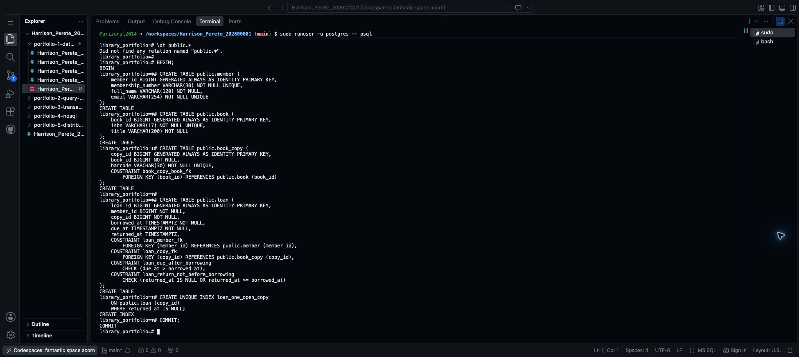
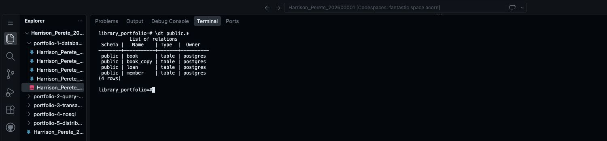
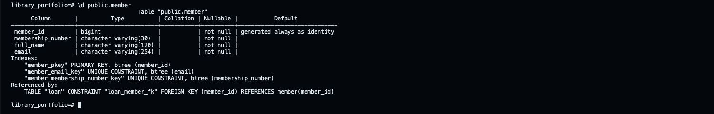
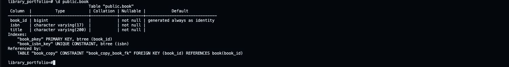
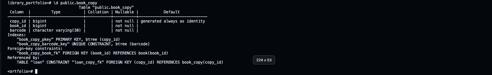
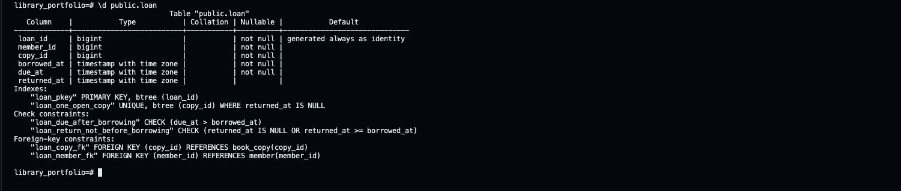

Step 9 Create and check the tables
Portfolio 1 in Section 4 of the assessment brief requires a relational schema, keys and constraints. Here, the design becomes actual PostgreSQL tables.
1. Prepare your SQL file
The library example uses this SQL file. SQL is the text PostgreSQL reads to create the tables.
For your own case study, use this prompt:
I am completing MIT 8103 Portfolio 1. Write a PostgreSQL 16 schema
from my agreed design below.
MY DESIGN AND NUMBERED BUSINESS RULES
[PASTE YOUR DESIGN FROM STEP 5]
Return only SQL file contents, with short, simple comments.
Keep exactly my agreed tables, fields, types and relationships.
Create the tables in public, with referenced tables created first.
Use automatically generated identity IDs and primary keys as designed.
Include required NOT NULL fields, UNIQUE rules, foreign keys and CHECKs.
Keep optional fields nullable. Use a partial unique index if a rule
requires uniqueness only for some rows, such as open loans.
Wrap the statements in BEGIN and COMMIT. Do not insert sample data.
Do not use DROP, IF NOT EXISTS, passwords or database-creation commands.
Do not claim that rules needing later transaction logic are enforced
by the table definitions; mention those limits in a short SQL comment.In Codespaces, create a file in portfolio-1-database-design named Harrison_Perete_202600001_P1_Schema.sql, using your own name and ID. Paste the reviewed SQL and save it.
The .sql file stores the commands. Saving it does not create tables; running its commands does.
Pictures go in portfolio-1-database-design/screenshots. If that folder does not exist yet, right-click portfolio-1-database-design in Explorer → New Folder… → enter screenshots. Keep your SQL files in the parent folder.
In every filename below, replace Harrison_Perete_202600001 with your own Surname_Firstname_StudentID. For another case study, use your own table names instead of Member, Book or Loan. Use no spaces. Keep the picture's actual extension: .png or .jpg.
On a phone or tablet, use its screenshot buttons. If you need to rename a picture after uploading, right-click it in Codespaces Explorer and choose Rename….
2. Check where you are
Use the PostgreSQL session from Step 8. The prompt should show your database name, such as library_portfolio=#.
SELECT current_database();For this demo, the result must be library_portfolio. Then enter:
\dt public.*Before the first run, the practice database should have no tables. If it already contains tables, stop and check them; do not delete them or run the schema again blindly.
3. Create the tables, one at a time
The complete library commands are below, in order. Run each block once in PostgreSQL. For a different case study, use the matching commands from your own SQL file.
If a command fails, enter ROLLBACK;, fix your SQL, then restart this group. Do not continue after an error.
Start the group
BEGIN;Expected result: BEGIN.
Create member
Copy this whole block and press Enter:
CREATE TABLE public.member (
member_id BIGINT GENERATED ALWAYS AS IDENTITY PRIMARY KEY,
membership_number VARCHAR(30) NOT NULL UNIQUE,
full_name VARCHAR(120) NOT NULL,
email VARCHAR(254) NOT NULL UNIQUE
);Expected result: CREATE TABLE.
Take a screenshot of the command and result: Mac: Shift + Command + 4; Windows: Windows + Shift + S. Save it as Harrison_Perete_202600001_P1_MemberCreation.png. In Codespaces Explorer, right-click its screenshots folder → Upload… → select the picture. Check that it appears in the folder.
Create book
CREATE TABLE public.book (
book_id BIGINT GENERATED ALWAYS AS IDENTITY PRIMARY KEY,
isbn VARCHAR(17) NOT NULL UNIQUE,
title VARCHAR(200) NOT NULL
);Expected result: CREATE TABLE.
Take a screenshot of the command and result: Mac: Shift + Command + 4; Windows: Windows + Shift + S. Save it as Harrison_Perete_202600001_P1_BookCreation.png. In Codespaces Explorer, right-click its screenshots folder → Upload… → select the picture.
Create book_copy
CREATE TABLE public.book_copy (
copy_id BIGINT GENERATED ALWAYS AS IDENTITY PRIMARY KEY,
book_id BIGINT NOT NULL,
barcode VARCHAR(30) NOT NULL UNIQUE,
CONSTRAINT book_copy_book_fk
FOREIGN KEY (book_id) REFERENCES public.book (book_id)
);Expected result: CREATE TABLE.
Take a screenshot of the command and result: Mac: Shift + Command + 4; Windows: Windows + Shift + S. Save it as Harrison_Perete_202600001_P1_BookCopyCreation.png. In Codespaces Explorer, right-click its screenshots folder → Upload… → select the picture.
Create loan
CREATE TABLE public.loan (
loan_id BIGINT GENERATED ALWAYS AS IDENTITY PRIMARY KEY,
member_id BIGINT NOT NULL,
copy_id BIGINT NOT NULL,
borrowed_at TIMESTAMPTZ NOT NULL,
due_at TIMESTAMPTZ NOT NULL,
returned_at TIMESTAMPTZ,
CONSTRAINT loan_member_fk
FOREIGN KEY (member_id) REFERENCES public.member (member_id),
CONSTRAINT loan_copy_fk
FOREIGN KEY (copy_id) REFERENCES public.book_copy (copy_id),
CONSTRAINT loan_due_after_borrowing
CHECK (due_at > borrowed_at),
CONSTRAINT loan_return_not_before_borrowing
CHECK (returned_at IS NULL OR returned_at >= borrowed_at)
);Expected result: CREATE TABLE.
Take a screenshot of the command and result: Mac: Shift + Command + 4; Windows: Windows + Shift + S. Save it as Harrison_Perete_202600001_P1_LoanCreation.png. In Codespaces Explorer, right-click its screenshots folder → Upload… → select the picture.
NOT NULL means a value is required. UNIQUE prevents repeats. REFERENCES links tables. CHECK checks a rule, such as the due date being after borrowing. public is the standard area where these tables are stored.
Add the one-open-loan rule
CREATE UNIQUE INDEX loan_one_open_copy
ON public.loan (copy_id)
WHERE returned_at IS NULL;Expected result: CREATE INDEX. This checks only loans with no return date. Copy 10 can have many past loans, but no more than one open loan.
Take a screenshot of the command and result: Mac: Shift + Command + 4; Windows: Windows + Shift + S. Save it as Harrison_Perete_202600001_P1_OpenLoanIndex.png. In Codespaces Explorer, right-click its screenshots folder → Upload… → select the picture.
Save the group
COMMIT;Expected result: COMMIT.
Take a screenshot of the command and result: Mac: Shift + Command + 4; Windows: Windows + Shift + S. Save it as Harrison_Perete_202600001_P1_SchemaCommit.png. In Codespaces Explorer, right-click its screenshots folder → Upload… → select the picture.

4. List the tables
\dt public.*The library result should list member, book, book_copy and loan.
Take a screenshot of the command and result: Mac: Shift + Command + 4; Windows: Windows + Shift + S. Save it as Harrison_Perete_202600001_P1_TableList.png. In Codespaces Explorer, right-click its screenshots folder → Upload… → select the picture.

5. Inspect the keys and constraints
Run each check below. You do not need to run CREATE TABLE again.
If output pauses at (END), press q to return to the PostgreSQL prompt.
Check member
\d public.memberLook for the primary key on member_id and unique membership_number and email under Indexes. Every field says not null, meaning it is required.
Take a screenshot of the command and result: Mac: Shift + Command + 4; Windows: Windows + Shift + S. Save it as Harrison_Perete_202600001_P1_MemberConstraints.png. In Codespaces Explorer, right-click its screenshots folder → Upload… → select the picture.

Check book
\d public.bookLook for the primary key on book_id, unique isbn and not null on every field.
Take a screenshot of the command and result: Mac: Shift + Command + 4; Windows: Windows + Shift + S. Save it as Harrison_Perete_202600001_P1_BookConstraints.png. In Codespaces Explorer, right-click its screenshots folder → Upload… → select the picture.

Check book_copy
\d public.book_copyLook for the primary key on copy_id, unique barcode and the foreign key linking book_id to book. Every field is required.
Take a screenshot of the command and result: Mac: Shift + Command + 4; Windows: Windows + Shift + S. Save it as Harrison_Perete_202600001_P1_BookCopyConstraints.png. In Codespaces Explorer, right-click its screenshots folder → Upload… → select the picture.

Check loan
\d public.loanLook for the primary key, two foreign keys, two date checks and loan_one_open_copy under Indexes. returned_at is the only optional field: its Nullable entry is blank rather than not null.
Take a screenshot of the command and result: Mac: Shift + Command + 4; Windows: Windows + Shift + S. Save it as Harrison_Perete_202600001_P1_LoanConstraints.png. In Codespaces Explorer, right-click its screenshots folder → Upload… → select the picture. Open an uploaded picture to check that its text is readable.

These checks confirm the table definitions. Sample inserts and rejected invalid records are checked in the next step. The return-once operation needs transaction logic later; these tables alone do not enforce that workflow.
6. Save the SQL and screenshots to GitHub
Open a new terminal using Terminal → New Terminal. Leave the PostgreSQL terminal open. Run these commands at the new terminal's $ prompt, using your own filename:
git diff --check
git add portfolio-1-database-design/
git diff --cached --stat
git commit -m "Add schema and Portfolio 1 table evidence"
git push origin mainThe git add command includes the SQL and uploaded pictures in this folder. Check the list shown by git diff --cached --stat before committing. Never commit database passwords.
See the completed library SQL file on GitHub.
Reference: PostgreSQL 16 constraints.